当前主界面与操作窗口的原稿入口。下方展示原始设计图片，HTML 仅用于浏览，不是界面原型。
主窗口、独立解压确认及各操作状态共用一套视觉基线。完整原稿在此展示，图标、示例照片与原像素对照切片统一从素材库查看。当前主窗口的完整深色原稿尚缺；生成式图像不等于逐像素规范或已实现功能。
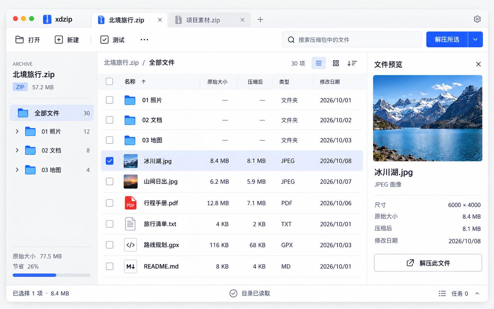


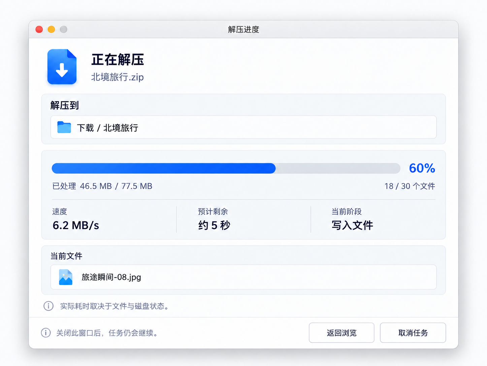
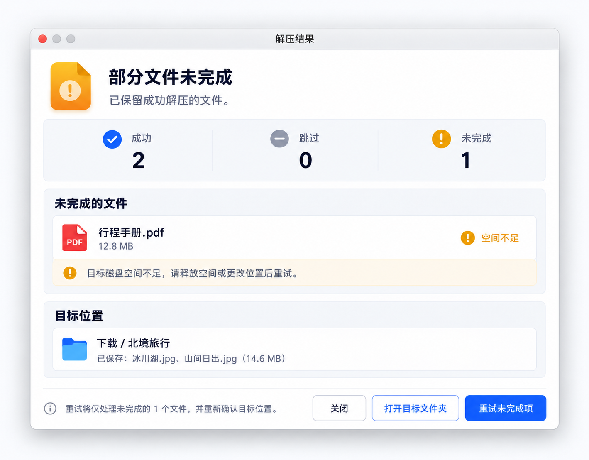
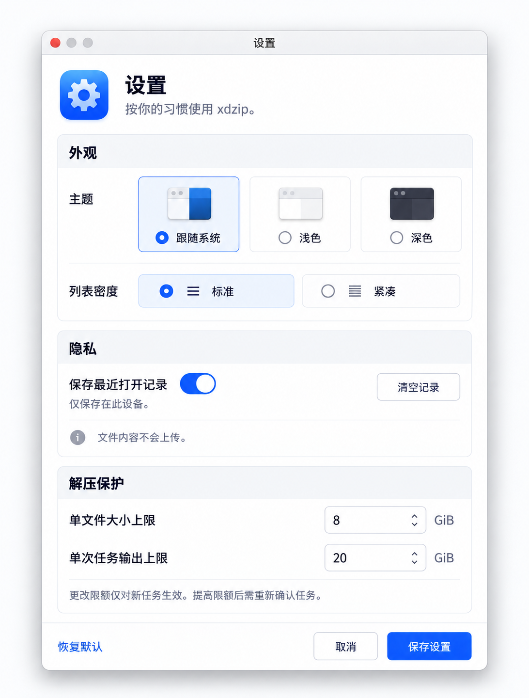
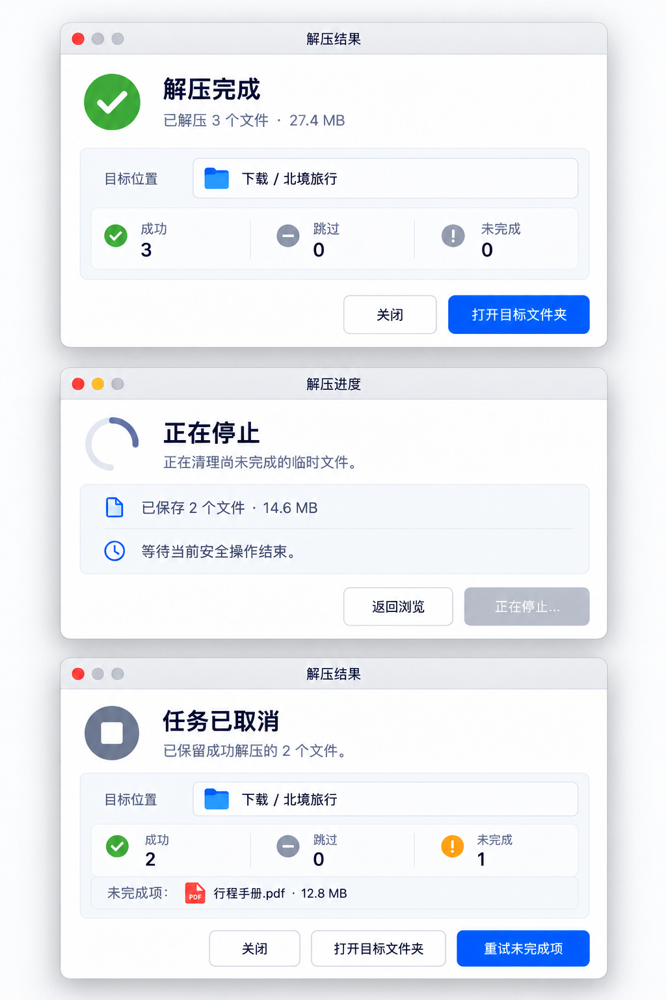

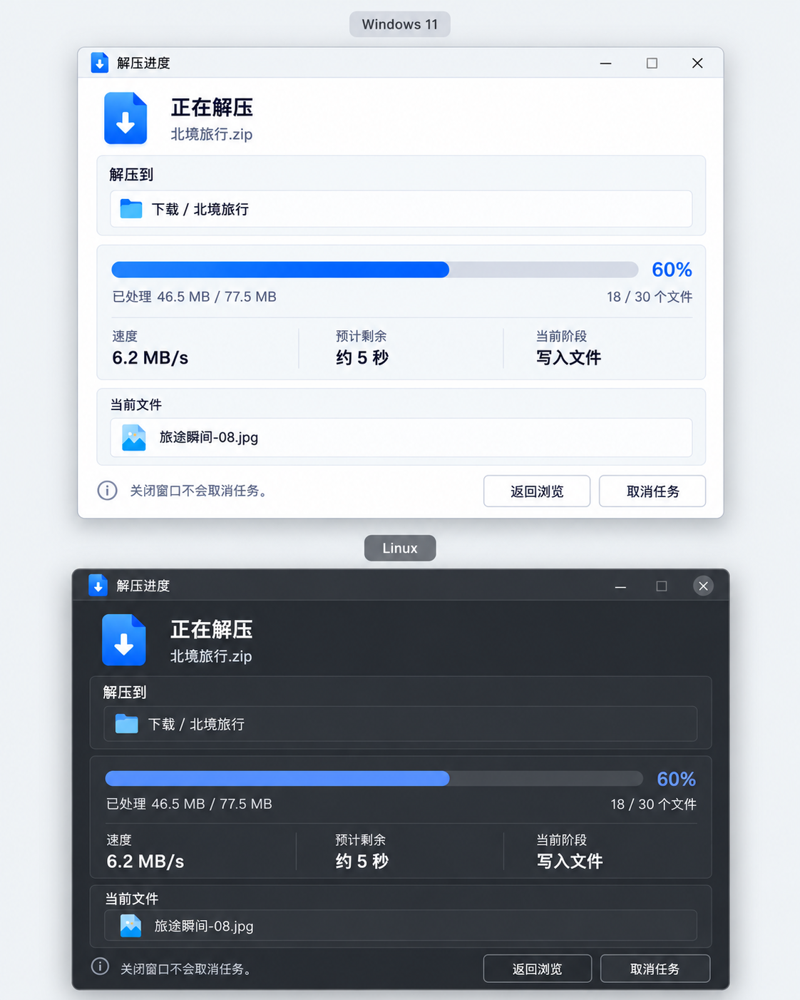
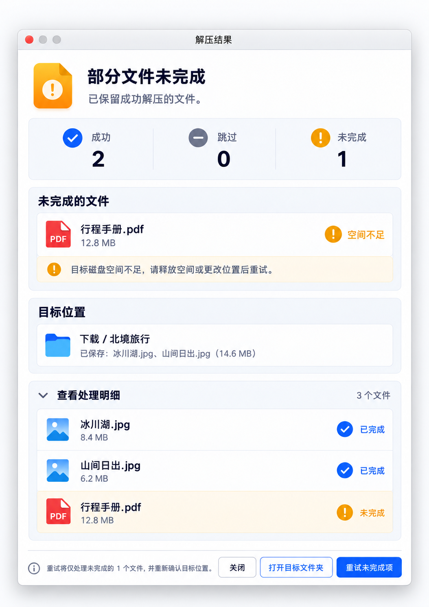
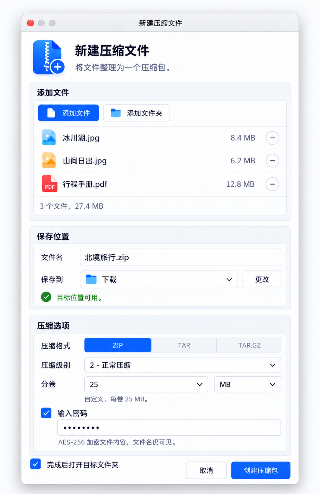
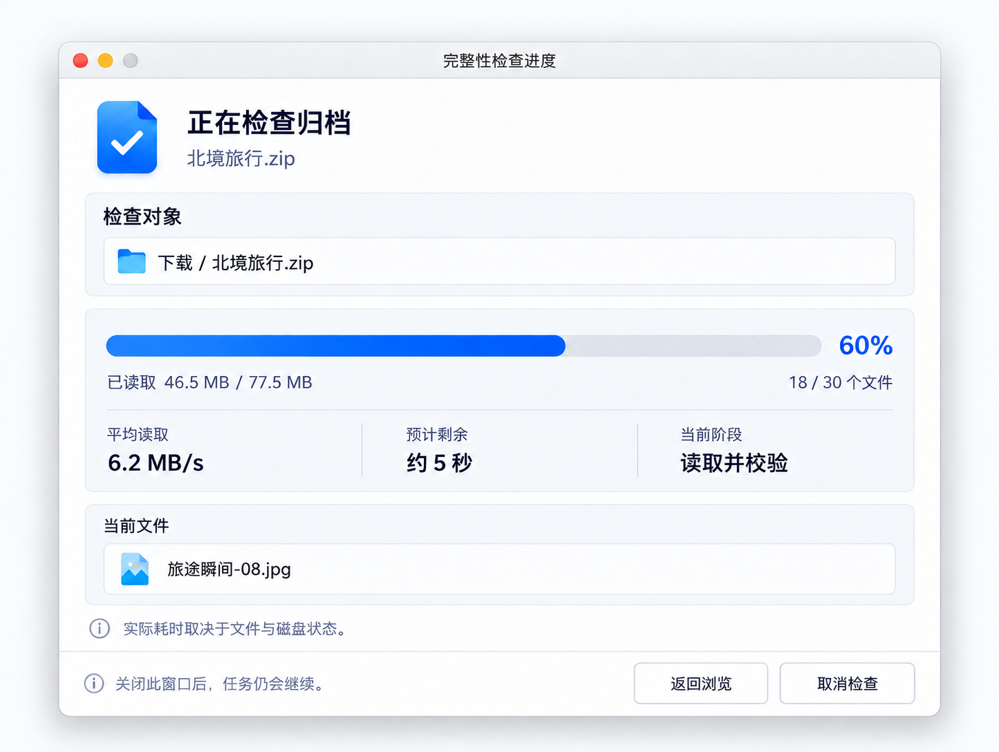
下列三张图板定义多级目录、节点状态与导航边界，补充主稿中的侧栏。设计已交付，HTML 与 Qt 的目录树仍待按此稿接入；图板为放大的视觉说明，准确控件尺寸和行为见 目录树规格，逐项切图见 统一素材库。
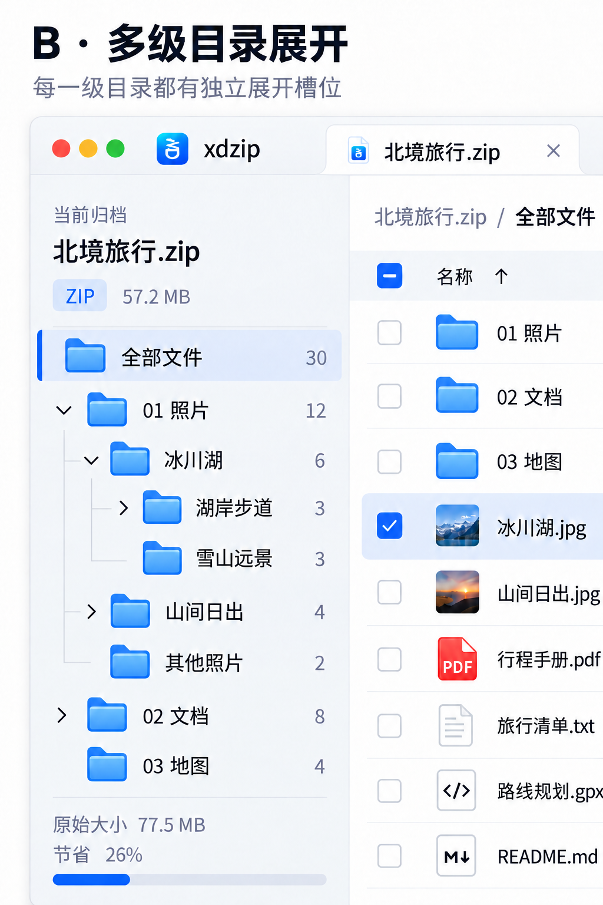
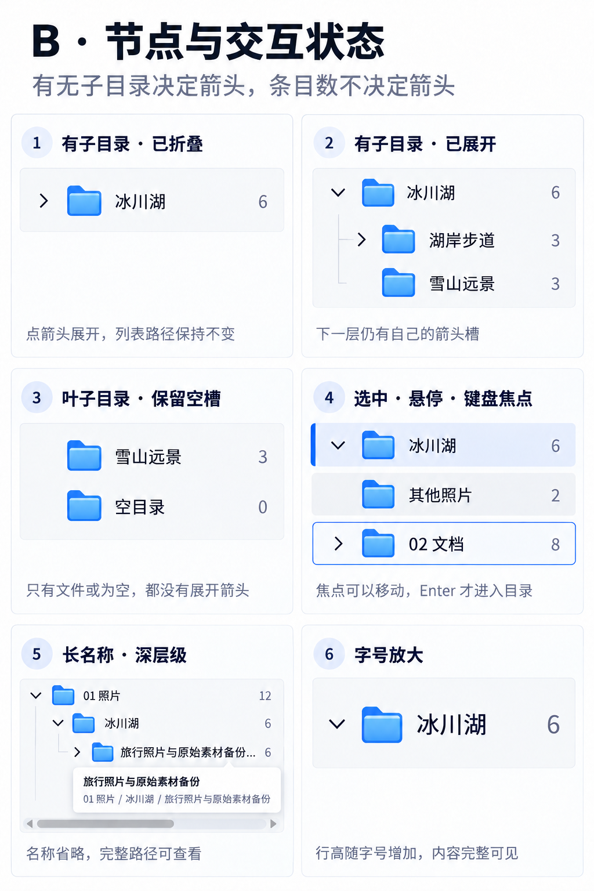
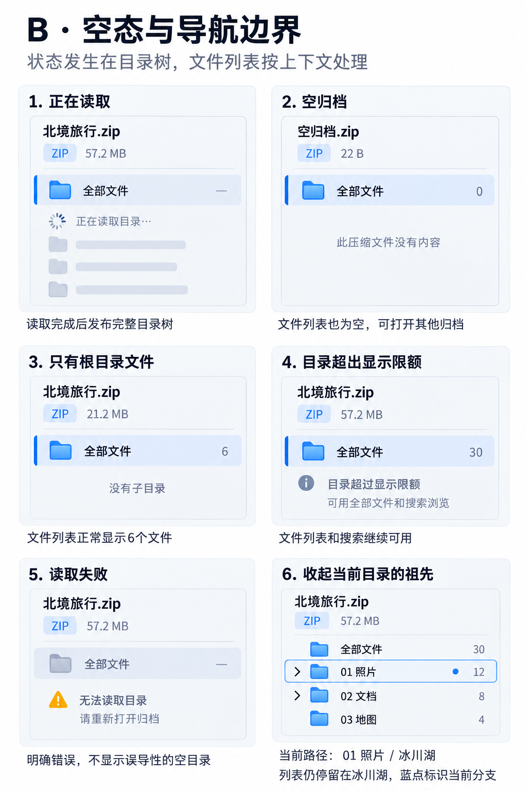